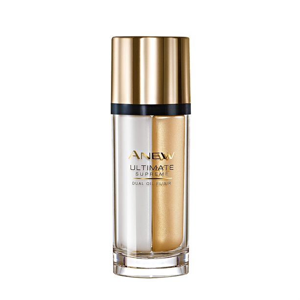

MANOritualai.lt - MANO natūrali kosmetika - pagaminta Lietuvoje!
2020.10.27 13:18

Parduotuvė Dėmesio centre Perkamiausi Naujienos Plaukams Aliejiniai serumai Šampūnai Kondicionieriai Plaukų galiukų priežiūra Veidui Serumai Prausikliai Lūpų priežiūra Aromaterapija Eteriniai aliejai Eterinių aliejų mišiniai Apie mus Kur įsigyti? Lojalumo programa Atsiliepimai Tinklaraštis Draugiška aplinkai Susisiekime 0 Jūsų krepšelyje dar nėra produktų
Dėmesys Jūsų natūraliam grožiui
Tausojantys, natūralios kilmės ingredientai padės atskleisti odos potencialą.
Rinktis
Perkamiausi produktai
Drėkinantis kondicionierius
Įvertinimas: 4.93 iš 5 (viso įvertinimų: 56 ) (56 pirkėjų atsiliepimai) 12,90 € – 24,90 €MANO kondicionierius su drėgmės palaikymo funkcija sukurtas iš natūralių ingredientų, kurie sugrąžina spindesį ir paklusnumą plaukams. Ypač tiks sausų, pažeistų plaukų puoselėjimui arba normalių plaukų priežiūrai, kai norima didesnio glotnumo. Su maitinančiu aukščiausios kokybės arganų aliejumi ir augalinių keratinų kompleksu tam, kad plaukų struktūra būtų atsparesnė išorės veiksniams. Kartu veikia ir drėgmę pritraukiančios hialurono bei pieno rūgštys. Jokio sunkumo, tik natūralus gamtos prisilietimas!
Pasirinkti savybes Pasirinkti savybesBalansuojantis šampūnas (normaliems ir riebiems plaukams)
Įvertinimas: 4.78 iš 5 (viso įvertinimų: 18 ) (18 pirkėjų atsiliepimai) 11,90 € – 20,90 €Kasdieniam galvos plovimui tinkanti formulė, kuri valo, atgaivina ir puoselėja plaukus bei galvos odą. Palaikant natūralų galvos odos balansą, reguliuojamas šaknų riebalavimasis, todėl švaros jausmas gali išlikti ilgiau. Šampūno sudėtyje – tik natūralios kilmės plovikliai, kurie rūpinasi švara nepažeisdami epidermio funkcijų. Praturtintas B grupės vitaminais ir drėkikliais, suteikiančiais geidžiamą plaukų žvilgesį ir purumą.
Natūralios kilmės ingredientai Subalansuotas pH Su niacinamidu, biotinu ir pantenoliuPuikiai dera tiek su drėkinančiu , tiek su atstatančiu kondicionieriumi.
Pasirinkti savybes Pasirinkti savybes
Hialurono rūgšties serumas su drėkiklių kompleksu
Įvertinimas: 4.87 iš 5 (viso įvertinimų: 107 ) (107 pirkėjų atsiliepimai) 16,90 €Hialurono rūgšties serumas su drėkiklių kompleksu sukurtas visapusiškam odos puoselėjimui, drėkinimui ir odos apsaugai. Mažos ir didelės molekulinių masių hialurono rūgštys užtikrina odos drėkinimą tiek išoriniuose, tiek gilesniuose odos sluoksniuose. Niacinamidas drėkina, lygina odos paviršių, gerina odos barjero funkcijas, stabdo priešuždegiminius procesus. Pantenolis (provitaminas B5) drėkina, ramina odą. Alantoinas ramina, padeda išlaikyti drėgmę, lygina odą ir saugo nuo išorinio poveikio.
Į krepšelį Į krepšelį
Kuo mūsų produktai išskirtiniai?
facebook instagram
Informacija pirkėjui
Pristatymo sąlygosPrekių grąžinimas
Teisinės nuostatos
Privatumo politika
Kontaktai
Produktų naudojimas
Vartotojo paskyra
Vartotojo PaskyraRegistracija
Užsakymo sekimas
Lojalumo programa
Įgyvendinami projektai
© 2017 - 2020 MANO
Ši svetainė naudoja slapukus, kad pagerintų naršymo patirtį, Jūs dėl to nepatirsite jokių nepatogumų, bet visada galite atsisakyti. Sutinku Nesutinku Skaityti plačiau Privatumas ir slapukų politika ClosePrivacy Overview
This website uses cookies to improve your experience while you navigate through the website. Out of these, the cookies that are categorized as necessary are stored on your browser as they are essential for the working of basic functionalities of the website. We also use third-party cookies that help us analyze and understand how you use this website. These cookies will be stored in your browser only with your consent. You also have the option to opt-out of these cookies. But opting out of some of these cookies may affect your browsing experience. Necessary Necessary Always EnabledNecessary cookies are absolutely essential for the website to function properly. This category only includes cookies that ensures basic functionalities and security features of the website. These cookies do not store any personal information.
Non-necessary Non-necessaryAny cookies that may not be particularly necessary for the website to function and is used specifically to collect user personal data via analytics, ads, other embedded contents are termed as non-necessary cookies. It is mandatory to procure user consent prior to running these cookies on your website.
Parduotuvė Dėmesio centre Perkamiausi Naujienos Plaukams Aliejiniai serumai Šampūnai Kondicionieriai Plaukų galiukų priežiūra Veidui Serumai Prausikliai Lūpų priežiūra Aromaterapija Eteriniai aliejai Eterinių aliejų mišiniai Apie mus Kur įsigyti? Lojalumo programa Atsiliepimai Tinklaraštis Draugiška aplinkai SusisiekimeNemokamas pristatymas į Lietuvoje nuo 30,00 Eur!
Krepšelis
- Kosmetika, kvepalai, dekoratyvinė kosmetika, profesionali ...
- Newcrush | Kosmetika | Maisto Papildai
- Maskshop.lt - Korėjietiška kosmetika internetu
- Meitan kosmetika
- Kosmetika - KOSMETIKA.LT
- Kosmetika ir higiena - BARBORA
- Kosmetika | Dekoratyvinė kosmetika | Urmas
- Asian Blossom korėjietiška kosmetika | AsianBlossom.lt
- Veronika Mašková – Kosmetika
- Solidu – Solid Cosmetics
- Kosmetika, kvepalai, dekoratyvinė kosmetika, profesionali ...
Kosmetika buvo naudojama jau seniausiais laikais tokiose didingose civilizacijose, kaip senovės Egiptas ar Mesopotamija, o plačiai aprašyto Kleopatros grožio paslaptimi buvo ne kas kita, bet įvairūs veido aliejai ir kremai.
- Newcrush | Kosmetika | Maisto Papildai
Kosmetika ir higiena Švaros ir gyvūnų prekės Namai ir laisvalaikis Pagrindinis puslapis Kosmetika ir higiena (8 5) 230 9309. Kasdien nuo 8 iki 21 val. El. p.: pagalba@barbora.lt. Kosmetika ir higiena. Popieriniai gaminiai Tualetinis popierius ; Popieriniai rankšluosčiai ...
- Maskshop.lt - Korėjietiška kosmetika internetu
Prekiaujame tik originaliais, žinomų kompanijų, korėjietiškais kosmetikos produktais. Korėjietiška kosmetika giriama visame pasaulyje dėl savo geros sudėties bei pagrindinio tikslo, palaikyti skaisčią, porcelianinę bei jaunatvišką veido odą. Maskshop.lt parduotuvėje rasite didelį korėjietiškų veido kaukių pasirinkimą.
- Meitan kosmetika
Kūno kremai, losjonai, aliejai Vonios ir dušo kremai, geliai Kvepalai, žvakės Muilas Pėdų ir nagų priežiūra Vonios putos ir druska Kūno serumai ir dulksnos Šveitikliai kūnui Rinkiniai kūnui Savaiminio įdegio priemonės Saulės kosmetika Dezodorantai Sausai kūno odai Dezinfekantai Visi produktai
- Kosmetika - KOSMETIKA.LT
SOLIDU – tai aplinkai draugiški kietieji šampūnai bei kondicionieriai, pagaminti Lietuvoje. Pasauliui skęstant plastike, turime ieškoti alternatyvų mums gerai pažįstamiems vonios produktams.
- Kosmetika ir higiena - BARBORA
Kosmetika ir jos paskirtis ilgą laiką nuolat kito, kaip ir nuomonė apie moteris, kurios naudojo kosmetiką ir dažėsi. Pavyzdžiui, Viduramžiais moterys, kurios dažėsi buvo smerkiamos, o kosmetika tarsi buvo palaido elgesio moterų atributas. XIX a. Anglijoje kosmetiką naudodavo daugiausiai tik prostitutės, o karalienė Viktorija viešai pasmerkė veido dažymą kaip netinkamą ir ...
- Kosmetika | Dekoratyvinė kosmetika | Urmas
Kosmetika Kompletní kosmetické ošetření pleti profesionální kosmetikou Essenté podle potřeb klientky. HydroJelly alginátové masky s mořskými řasami a elektrolyty pleť skvěle vyhlazují, odstraňují přebytečný maz, vytahují zbylé nečistoty, stahují póry a pomáhají lépe proniknout všem vyživujícím látkám do pleti.
- Asian Blossom korėjietiška kosmetika | AsianBlossom.lt
MANO natūrali kosmetika - tai pažangi natūrali kosmetika pagaminta Lietuvoje, besilaikant nepriekaištingos kokybės standartų kiekviename gamybos žingsnyje!
- Veronika Mašková – Kosmetika
„The Organic Pharmacy“ gimė iš noro sukurti geresnį grožį Pirmoji parduotuvė atidaryta 2002 metais Londono Kings gatvėje. Pagrindinis tikslas, – kurti 360 laipsnių grožį, tai yra rūpintis visapusiškai tiek išoriniu, tiek ir vidiniu grožiu, todėl The Organic Pharmacy savo asortimente turi ne tik veido ir kūno kosmetikos produktus, bet ir maisto papildus.
- Solidu – Solid Cosmetics
Meitan kosmetika Specialios kainos. Mūsų parduotuvėje visada rasite geriausias kainas. Peržiūrėkite šiuo metu parduotuvėje paskelbtas akcijas ir įsigykite mūsų produkciją geriausiomis kainomis. Peržiūrėti. Apie mus. MeiTan produktai - tai veiksmingos kosmetinės bei sveikatos profilaktikos priemonės, pagamintos pagal Rytų ...
Kosmetika buvo naudojama jau seniausiais laikais tokiose didingose civilizacijose, kaip senovės Egiptas ar Mesopotamija, o plačiai aprašyto Kleopatros grožio paslaptimi buvo ne kas kita, bet įvairūs veido aliejai ir kremai.
Kosmetika ir higiena Švaros ir gyvūnų prekės Namai ir laisvalaikis Pagrindinis puslapis Kosmetika ir higiena (8 5) 230 9309. Kasdien nuo 8 iki 21 val. El. p.: pagalba@barbora.lt. Kosmetika ir higiena. Popieriniai gaminiai Tualetinis popierius ; Popieriniai rankšluosčiai ...
Prekiaujame tik originaliais, žinomų kompanijų, korėjietiškais kosmetikos produktais. Korėjietiška kosmetika giriama visame pasaulyje dėl savo geros sudėties bei pagrindinio tikslo, palaikyti skaisčią, porcelianinę bei jaunatvišką veido odą. Maskshop.lt parduotuvėje rasite didelį korėjietiškų veido kaukių pasirinkimą.
Kūno kremai, losjonai, aliejai Vonios ir dušo kremai, geliai Kvepalai, žvakės Muilas Pėdų ir nagų priežiūra Vonios putos ir druska Kūno serumai ir dulksnos Šveitikliai kūnui Rinkiniai kūnui Savaiminio įdegio priemonės Saulės kosmetika Dezodorantai Sausai kūno odai Dezinfekantai Visi produktai
SOLIDU – tai aplinkai draugiški kietieji šampūnai bei kondicionieriai, pagaminti Lietuvoje. Pasauliui skęstant plastike, turime ieškoti alternatyvų mums gerai pažįstamiems vonios produktams.
Kosmetika ir jos paskirtis ilgą laiką nuolat kito, kaip ir nuomonė apie moteris, kurios naudojo kosmetiką ir dažėsi. Pavyzdžiui, Viduramžiais moterys, kurios dažėsi buvo smerkiamos, o kosmetika tarsi buvo palaido elgesio moterų atributas. XIX a. Anglijoje kosmetiką naudodavo daugiausiai tik prostitutės, o karalienė Viktorija viešai pasmerkė veido dažymą kaip netinkamą ir ...
Kosmetika Kompletní kosmetické ošetření pleti profesionální kosmetikou Essenté podle potřeb klientky. HydroJelly alginátové masky s mořskými řasami a elektrolyty pleť skvěle vyhlazují, odstraňují přebytečný maz, vytahují zbylé nečistoty, stahují póry a pomáhají lépe proniknout všem vyživujícím látkám do pleti.
MANO natūrali kosmetika - tai pažangi natūrali kosmetika pagaminta Lietuvoje, besilaikant nepriekaištingos kokybės standartų kiekviename gamybos žingsnyje!
„The Organic Pharmacy“ gimė iš noro sukurti geresnį grožį Pirmoji parduotuvė atidaryta 2002 metais Londono Kings gatvėje. Pagrindinis tikslas, – kurti 360 laipsnių grožį, tai yra rūpintis visapusiškai tiek išoriniu, tiek ir vidiniu grožiu, todėl The Organic Pharmacy savo asortimente turi ne tik veido ir kūno kosmetikos produktus, bet ir maisto papildus.
Meitan kosmetika Specialios kainos. Mūsų parduotuvėje visada rasite geriausias kainas. Peržiūrėkite šiuo metu parduotuvėje paskelbtas akcijas ir įsigykite mūsų produkciją geriausiomis kainomis. Peržiūrėti. Apie mus. MeiTan produktai - tai veiksmingos kosmetinės bei sveikatos profilaktikos priemonės, pagamintos pagal Rytų ...
